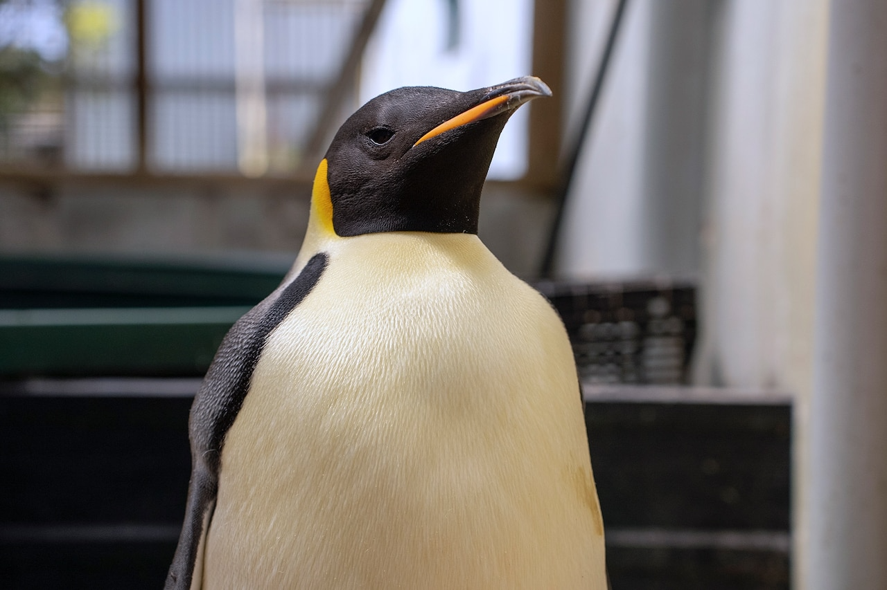

This penguin swam 2,000 miles to Australia—and we don't know why
As climate change bears down on Antarctica, understanding why some penguins end up meandering so far from their natural habitats may help aid future conservation efforts.
Read More
